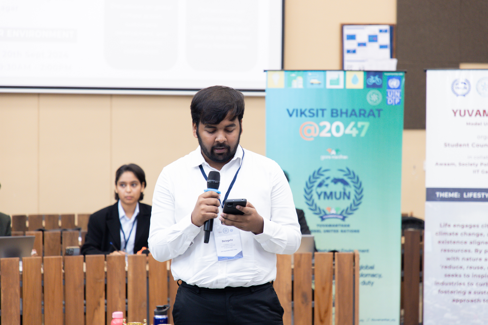
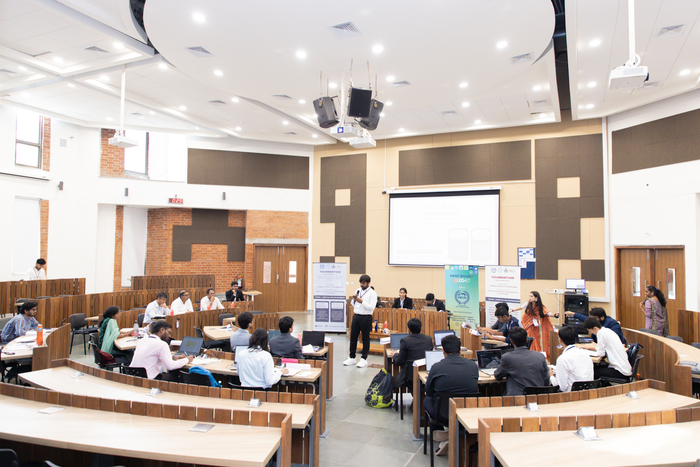
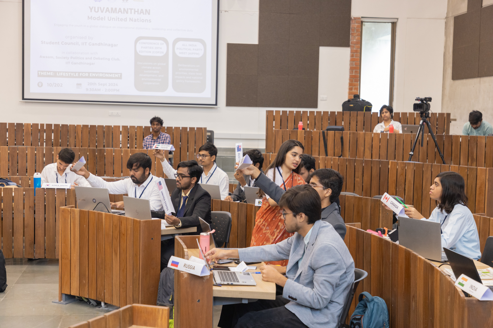

My Journey at Yuvamanthan Model United Nations: A Journey of Learning, Growth, and Climate Advocacy 🌍🌱
When I first signed up for the Yuvamanthan Model United Nations (YMUN), I had no idea that I was about to embark on one of the most insightful and transformative experiences of my life. As a delegate representing Bhutan in the COP29 Committee, I had the opportunity to not just represent my country but also contribute to critical global conversations on climate change and sustainable development. Here’s a look back at my journey through YMUN and the lessons I learned along the way.
Stepping into the Shoes of Bhutan 🌿
My journey began with a deep dive into Bhutan’s unique approach to climate action. Bhutan is not just any country; it is the world’s only carbon-negative nation, meaning it absorbs more carbon dioxide than it emits. Bhutan’s commitment to renewable energy, forestation, and sustainable development is truly inspiring. As a delegate, it was crucial to understand these initiatives in-depth to effectively represent the country at YMUN.
I researched Bhutan’s efforts to maintain 72% forest cover and produce 99.9% of its electricity from renewable hydropower. This research gave me a sense of pride, knowing that my country is doing so much to fight climate change. However, it also made me realize that while small nations like Bhutan are leading the way, much of the world still has a long way to go in meeting their climate commitments.
The YMUN Experience: A Platform for Change 🌍💬
At YMUN, the COP29 Committee was focused on tackling the climate crisis and finding concrete solutions to global warming. During our sessions, I saw firsthand how the world’s youth is incredibly passionate about making a difference. Whether it was during moderated caucuses or unmoderated discussions, delegates from all around the world presented innovative ideas and proposals.
The debates were intense, and the issues discussed were nothing short of urgent. I led a motion for a moderated caucus on global afforestation and green initiatives, advocating for countries to step up their commitments to planting trees and reducing deforestation. Through this process, I learned the importance of diplomacy, the need for compromise, and how to craft effective resolutions that can unite diverse opinions.
The Power of Youth: More Than Just Words 🙌🌱
One of the most powerful takeaways from YMUN was realizing the influence young people have in shaping the future. Being part of a platform where passionate youth from all over the world gathered to discuss climate change reaffirmed my belief that the future is in our hands. It’s our responsibility to drive change, whether we are in government positions or simply advocating for better policies.
What made YMUN truly special was the collaborative spirit. Even when we disagreed on various points, the discussions remained respectful, and everyone was focused on finding solutions, not just pointing out problems. I learned that the most effective leaders are those who can listen, collaborate, and act swiftly.
A Special Mention: Recognition for Effort 🌟🏅
One of the proudest moments of my YMUN journey came when I was awarded a Special Mention for my contributions as a delegate of Bhutan. To be recognized as one of the top three delegates was an honor, but what meant more to me was knowing that the effort I put into researching, speaking, and collaborating had made a real impact. This recognition motivated me to continue advocating for climate action and sustainable development in my future endeavors.
Reflecting on the Bigger Picture 🌍💡
While YMUN was a competition, it was also an eye-opening learning experience. The climate crisis is real, and it’s affecting every nation, no matter how developed or developing. The truth is, Bhutan has been doing its part, but the bigger challenge lies in convincing the world to act NOW, rather than waiting for years to make a change.
The global community needs to act more aggressively and decisively on climate change. During my time at YMUN, I came to understand the importance of revisiting carbon-neutral deadlines and strengthening commitments to renewable energy, sustainability, and climate resilience. The world cannot afford to wait until 2050—it needs to act now.

Final Thoughts: A Journey of Growth 🌱🚀
YMUN has given me the opportunity to develop valuable skills in public speaking, diplomacy, research, and policy advocacy. More importantly, it reinforced my belief that climate change is the most pressing challenge of our time, and the youth are the driving force behind solutions. I’m leaving this experience more determined than ever to make a difference in the world.
A special thanks to IIT Gandhinagar, the Government of India, and the UNDP for organizing such an impactful event. Let’s continue working together, pushing for immediate climate action, and protecting our planet for future generations.
The journey doesn’t stop here. The fight against climate change must go on!